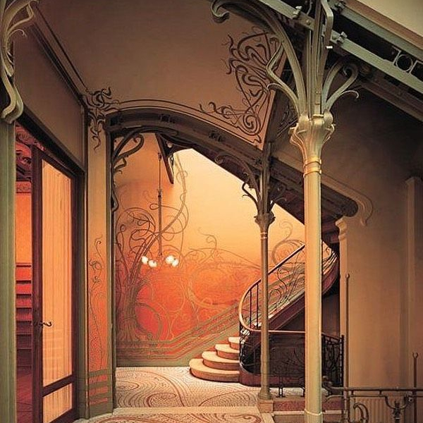
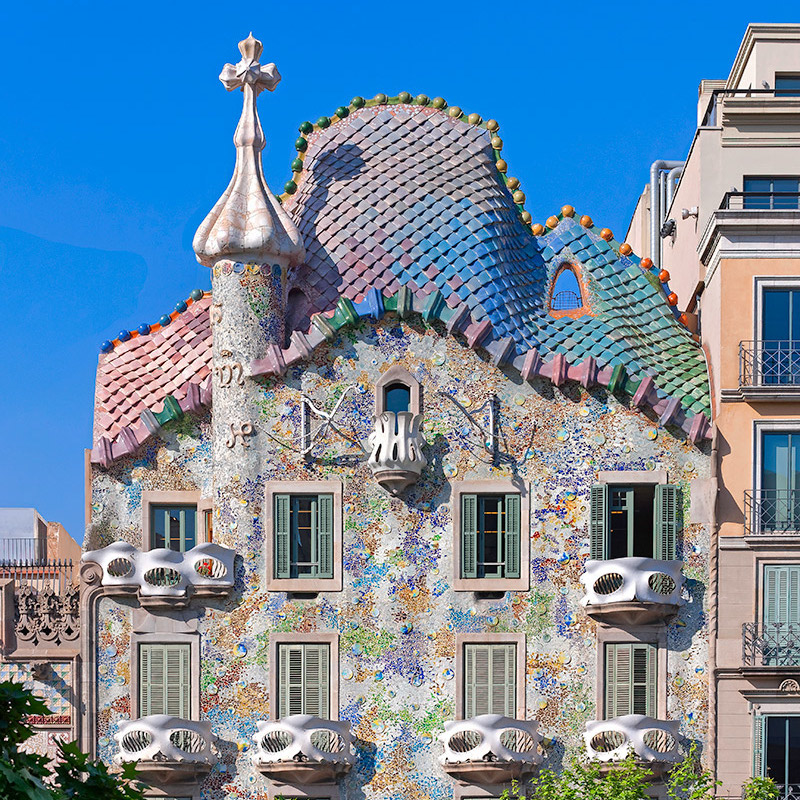
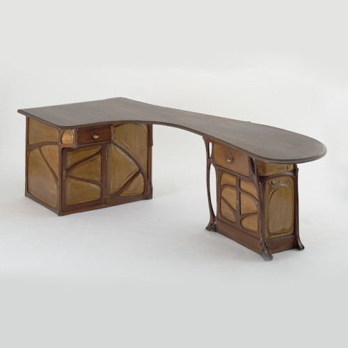
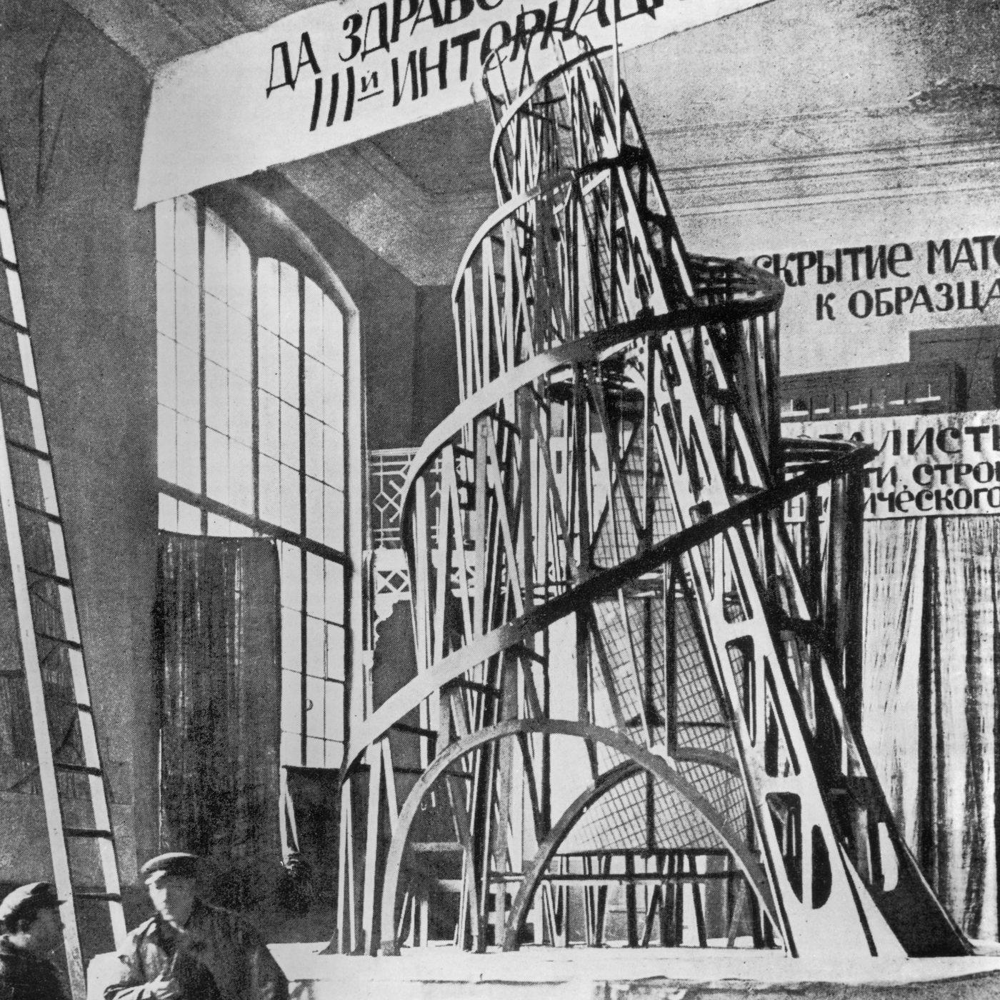
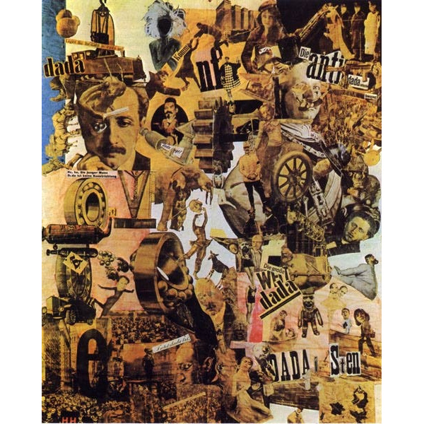
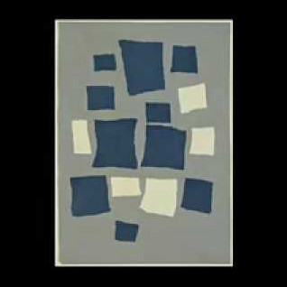
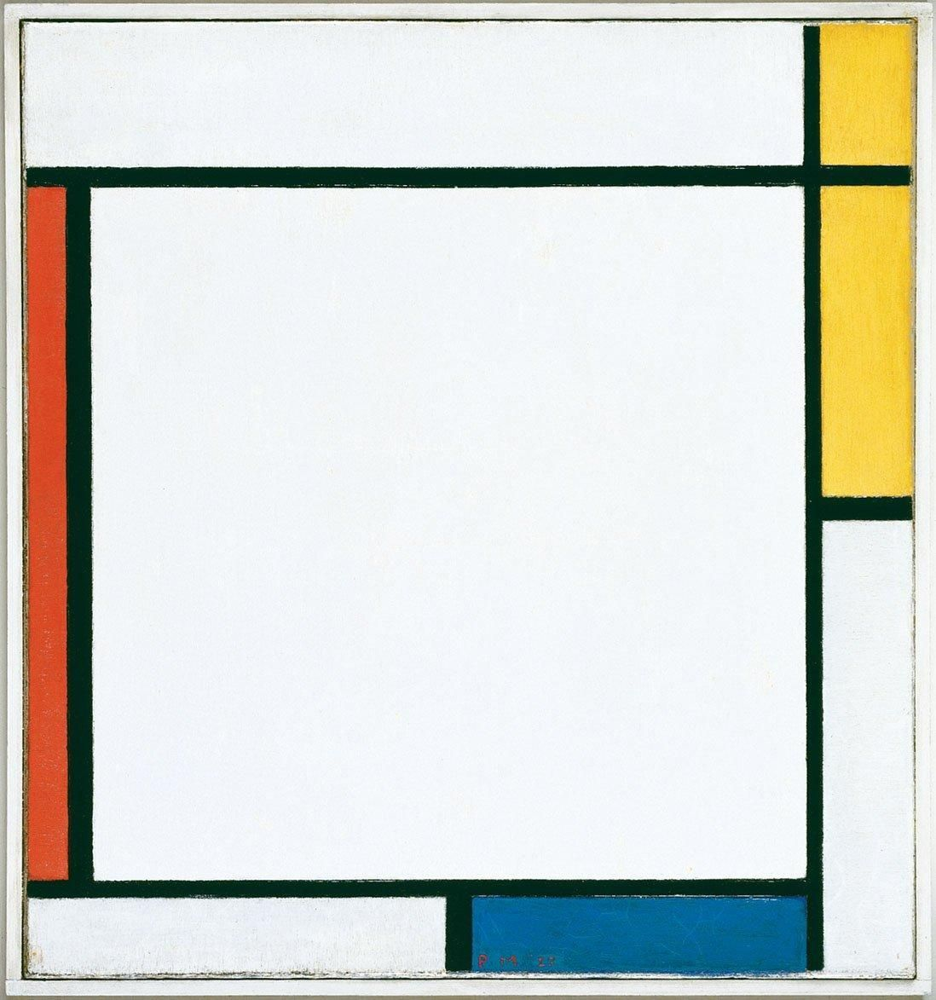

Victor Horta was a belgian architect who pioneered the Art Nouveau movement in the construction of Hôtel Tassel. Hôtel Tassel is located in Brussels and has many curvy and natural elements emblematic of the Art Nouveau movement.
Antoni Gaudí refurbished the Casa Batlló which an important architectal example of the Art Nouveau movement.
Hector Guimard's Desk is a great representation of how Art Nouveau drew on inspiration from nature. It's curves are similar to those seen in the posters seen in the movement.
Vladimir Tatlin was a russian constructionist. His sculpture Monument to the Third International shows the grand vision of what the soviet union could have created. However as a building it was never constructed.
"Cut with the Kitchen Knife Dada Through the Last Weimar Beer Belly Cultural Epoch of Germany" early example of photo montage, a type of collage. This work takes the medium farther than Picasso by juxtaposing many disjointed images.
Jean (Hans) Arp was part of the Dada movement. Arp's Collage with Squares Arranged according to the Laws of Chance is an example of how Dadaists were experimenting with chance based work. Arp supposedly created the work by dropping cutout squares on to the page and gluing them down.
Piet Mondrian was an early pioneer of abstract art in the De Stijl movement and his Composition with Red, Yellow and Blue from 1927 was one of the first works to employee only design elements.
